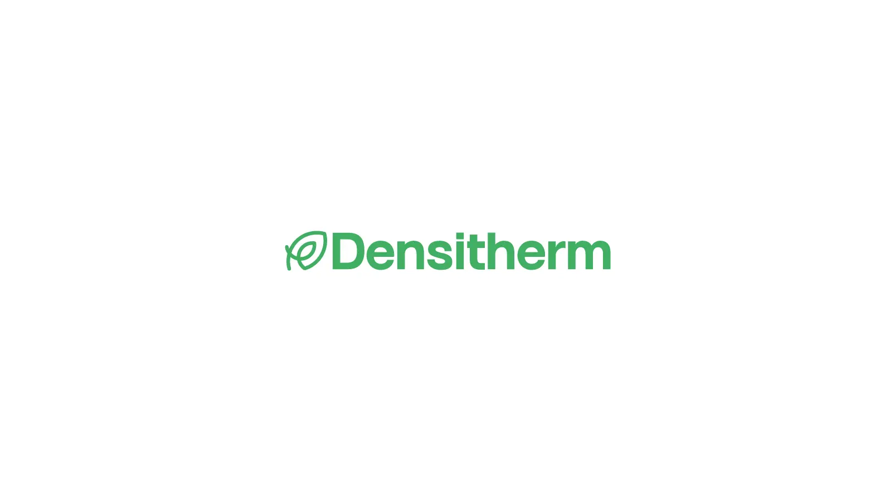
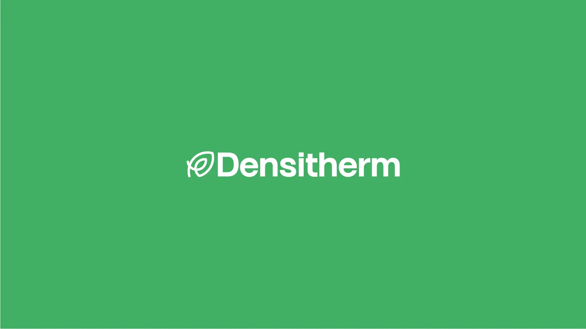
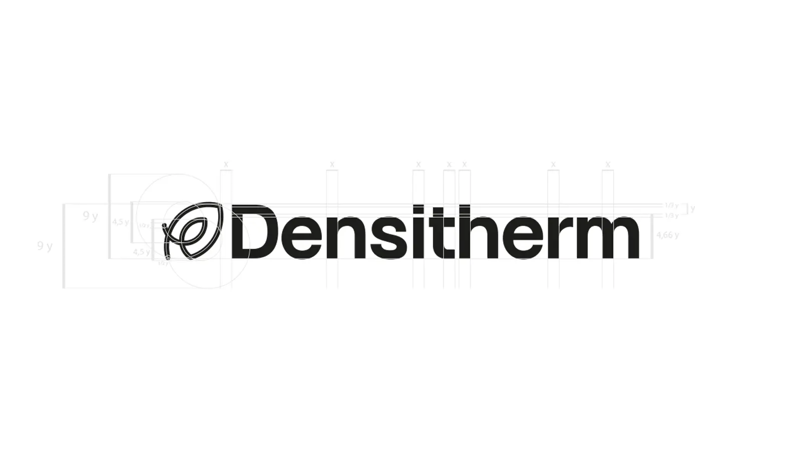
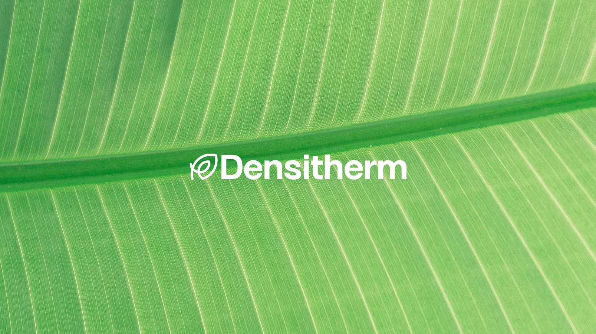
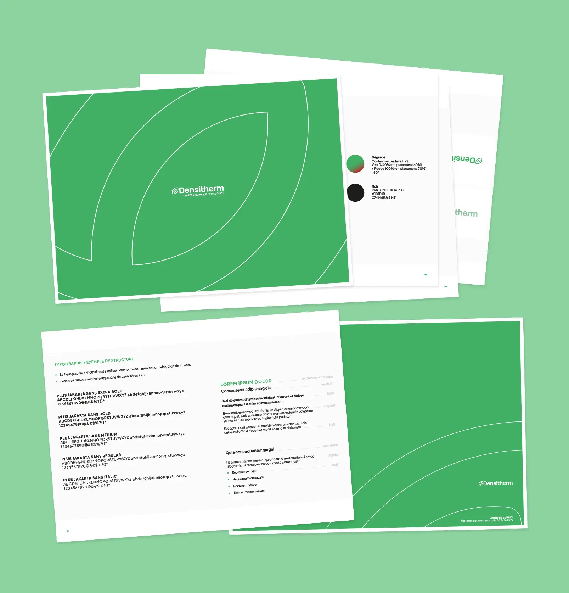
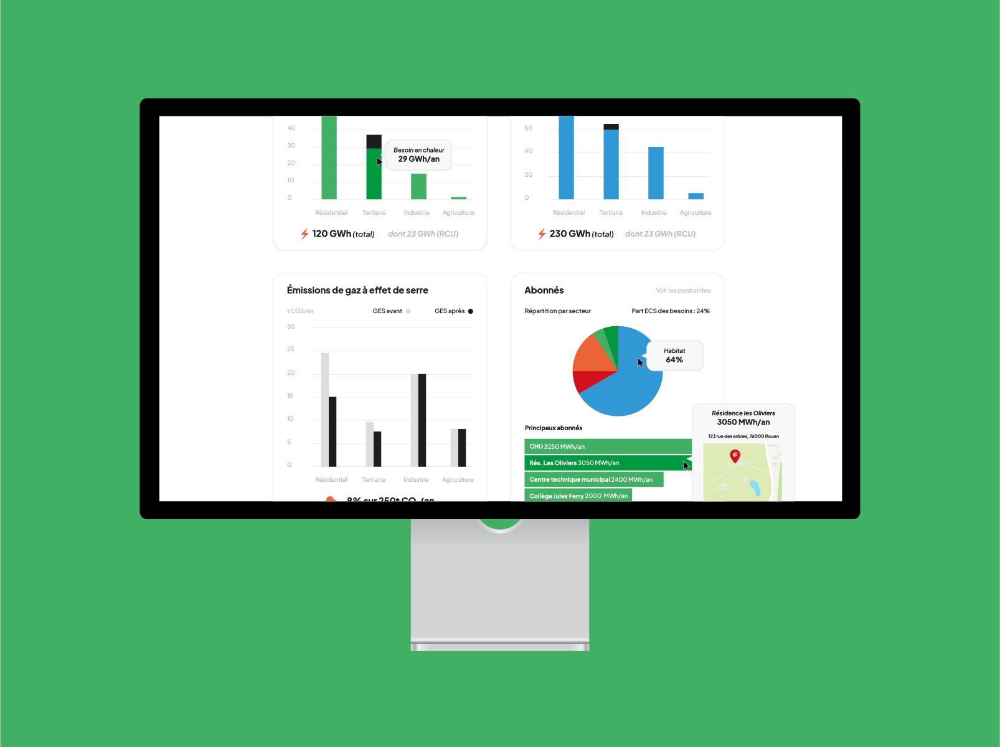
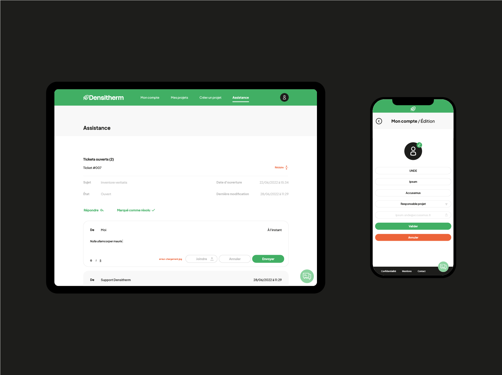
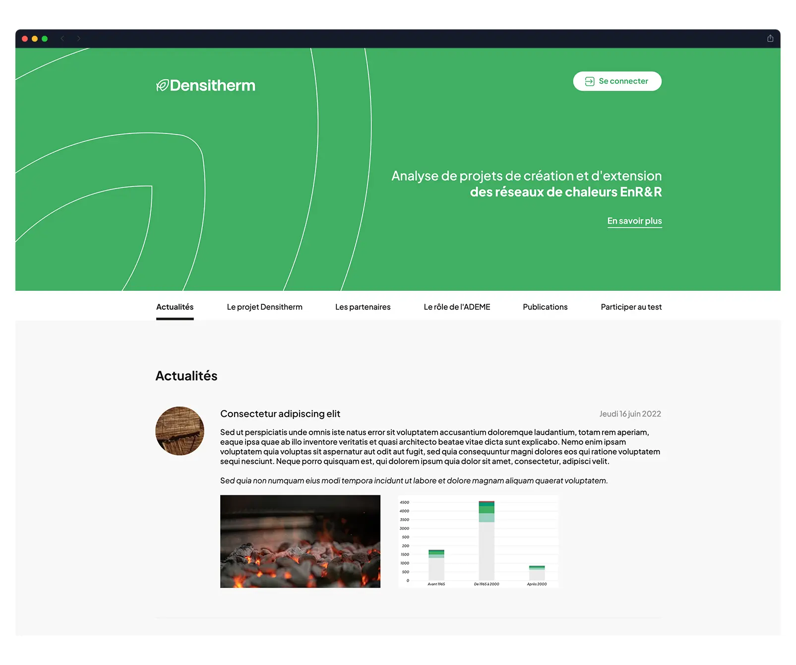
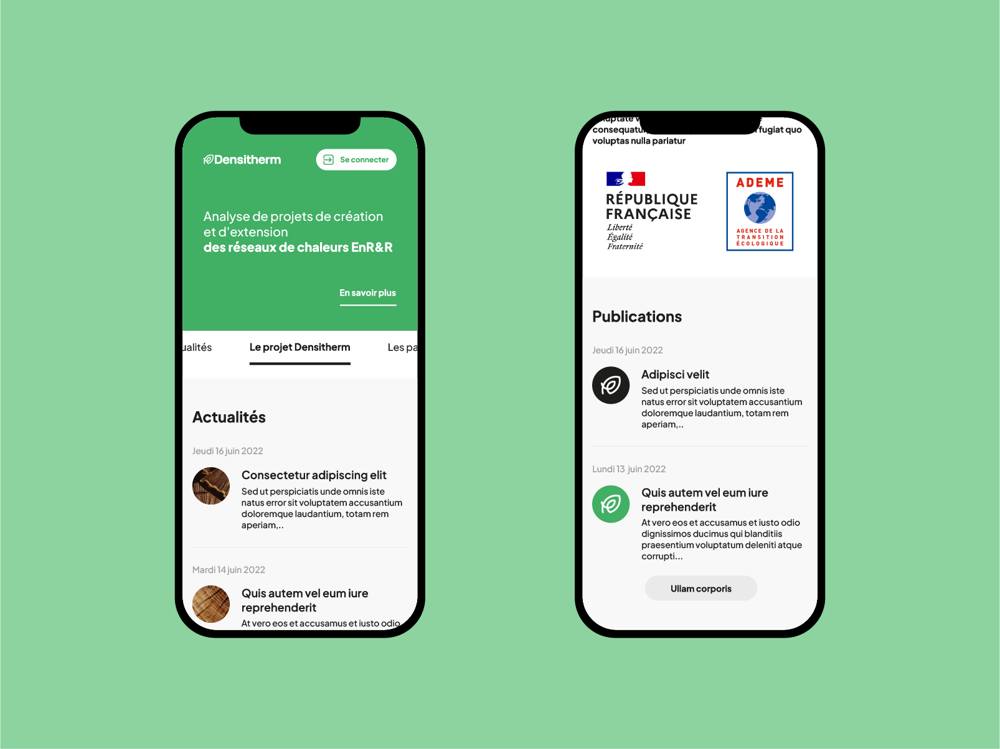

Densitherm — Identité Visuelle & Webdesign UI/UX en Normandie
Création totale de l'identité visuelle de la société Densitherm basée en Normandie, près de Rouen : logo d'entreprise, charte graphique, présentation PowerPoint, modèles de documents Word, ainsi que le webdesign UI/UX du site public et de l'espace applicatif utilisateur.
Logotype Institutionnel
Le logo s'appuie sur la représentation graphique des réseaux de chaleur alimentés par des énergies renouvelables et de récupération (EnR&R). La lettre initiale D de Densitherm fusionne subtilement avec la silhouette d'une feuille, symbole fort de préservation de la nature, et la représentation du réseaux de chaleur.




Charte Graphique
La charte graphique rassemble l'ensemble des règles fondamentales d'utilisation de l'identité visuelle Densitherm. Elle détaille l'usage du logo selon les contrastes de fonds, les tailles minimales d'affichage, ainsi que les palettes de couleurs normalisées et les associations typographiques.
Cliquez pour ouvrir le fichier PDF (8 pages).

Interface Webdesign UI/UX - Espace Utilisateur
Architecture UI/UX complète développée pour l'espace applicatif connecté des utilisateurs, intégrant un tableau de bord (Dashboard) modulaire et personnalisable. L'outil permet de simuler un projet de réseau de chaleur précis, de délimiter une zone géographique, et d'extraire des données techniques complexes sous forme de graphiques dynamiques et de tableaux de bord. Un module d'assistance technique vient compléter l'écosystème.


Cliquez pour ouvrir le fichier PDF (23 écrans).

Webdesign - Partie Publique (Desktop & Mobile)
Maquettage graphique du site web public au format One-Page accompagné de son interface adaptative mobile. Cette interface a pour vocation d'exposer synthétiquement le projet Densitherm, d'identifier les partenaires majeurs, de valoriser le soutien de l'ADEME et d'intégrer un formulaire d'inscription pour la phase de test. Un bouton d'accès restreint permet la connexion fluide vers l'espace utilisateur.
Cliquez pour ouvrir le fichier PDF (2 écrans).

